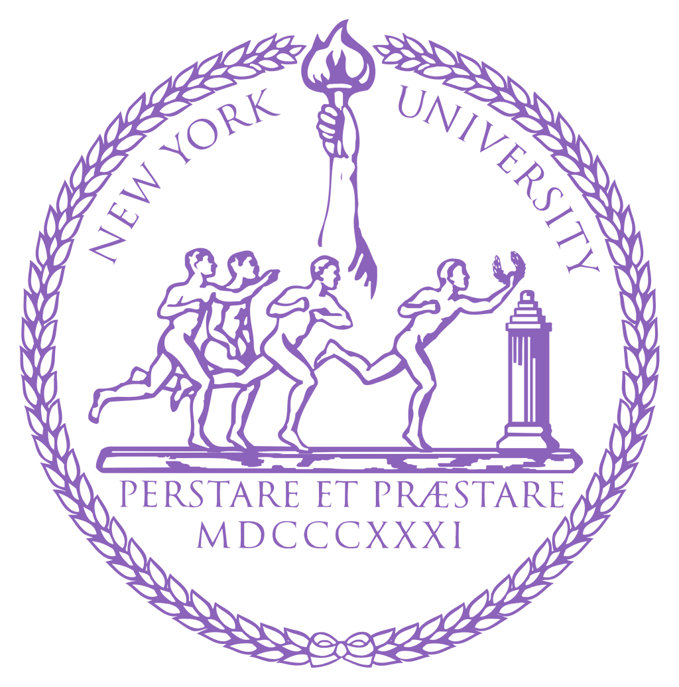

灵物模型与本体
灵物九十一，凡九门：VLA 十八，世界模型 十四，扩散策略 六，模仿学习 五，强化学习 六，运动控制 十，导航 九，具身推理 十，数据生成 四。有代码可寻者记其码，有分可录者八十三，余者记许可与出处，不见可核之分则阙之。


Spirit v1.6
千寻智能的具身基座模型；2026 年 11 月 RoboArena 官方榜以 1,788 Elo 列第一。


MWA-WALA
无界动力的隐空间世界模型，在 RoboCasa GR1 TableTop 自报 75.2%。


Being-H0.7
智在无界用 20 万小时人类视频训练的模型，发布方称 6 项评测综合排名第一。

ABot-M0
高德的操作基座模型，发布方称在 10 项评测上取得最高分。


LJM
莫刻机器人的隐空间世界模型，WorldArena EWMScore_P 自报 73.06，列第二。

π0.5
π0.5 用异构协同训练把 VLA 推向开放世界泛化。

GR00T N1.6
NVIDIA 的人形 VLA 基座，与 Isaac 仿真生态配套。
Cosmos3
NVIDIA 的物理 AI 世界模型，公司称其路线为先推理、再执行。

GO-1
智元的具身基座模型，面向多本体操作。


ERA-42
星动纪元的端到端具身模型，用于其人形与轮式本体。
π0
Physical Intelligence 开源 π0，首个通用机器人流匹配 VLA。
π0-FAST
π0-FAST 用 FAST 动作分词器让自回归 VLA 提速。
OpenVLA-OFT
OFT 把 OpenVLA 微调成连续动作、并行解码的快策略。
RDT-1B
RDT-1B 是 1.3B 的双臂操作扩散基座模型。
RDT2
RDT2 面向未见本体零样本部署的双版本 VLA。
GR00T N1
GR00T N1 是 NVIDIA 首个开源人形机器人通用基座模型。
GR00T N1.5
GR00T N1.5 升级 Eagle 2.5 骨干，人形语言跟随大幅提升。

RT-2
RT-2 首次把网络知识经 VLM 共微调迁移到机器人动作。
RT-X / Open X-Embodiment
OXE 汇集 22 种本体数据，训出 RT-1-X 与 RT-2-X。
Being-H0
Being-H0 用大规模人手视频预训练 VLA，放出三档权重。


UniVLA
UniVLA 从无动作标签视频里学任务中心潜在动作。
TinyVLA
TinyVLA 用 0.4B–1.3B 小模型证明 VLA 可以又快又省数据。
DexVLA
DexVLA 把 1B 扩散专家插件接到 Qwen2-VL 上做通用控制。
RynnVLA-001
RynnVLA-001 用人类第一视角视频给机器人补操作先验。
X-VLA
X-VLA 用 0.9B 软提示 Transformer 跨六仿真平台列第一。

villa-X
villa-X 在 VLA 里加本体驱动的潜在动作专家。
Spirit v1.5
千寻智能开源 Spirit-v1.5，登榜 RoboChallenge Table30。
Cosmos-Predict1 / Transfer1
NVIDIA 首个开放世界基础模型平台，含 Predict、Transfer、Tokenize。
Cosmos-Predict2
Cosmos 第二代预测模型，开放后训练与推理代码及权重。
Cosmos-Predict2.5
Cosmos 第三代前的集大成版：一个模型统一三种世界生成入口。


GigaWorld-0
把世界模型当数据引擎，为 VLA 合成具身交互数据。


UniSim
把互联网视频变成可交互模拟器，ICLR 2024 杰出论文。
DreamerV3
固定一套超参通吃多域的世界模型强化学习算法，登上 Nature。
Genie
11B 参数、从 20 万小时游戏视频自学的可交互世界模型。
Genie 2
从一张图生成可玩 3D 世界，最长维持约一分钟一致性。
Genie 3
首个可实时交互的通用世界模型，720p、24fps、分钟级一致性。

V-JEPA 2
在潜空间预测未来的视频世界模型，能零样本指挥机器人。


1X World Model
为全身人形机器人造的评估型世界模型，用预测成功率挑策略。


GAIA-1
9.4B 的驾驶世界模型，把视频、文本、动作统一进生成。
GAIA-2
可精细控制的多视角驾驶世界模型，主打安全场景合成。
WorldVLA
把动作预测与未来视频生成放进同一个自回归模型。

Diffusion Policy
扩散策略的开山之作，RSS 2023，把动作生成写成条件去噪。

3D Diffuser Actor
把扩散策略建在 3D 场景表征上，RLBench 领先一大截。
Equivariant Diffusion Policy
给扩散策略加上旋转等变性，少数据也能学好。
Consistency Policy
把扩散策略蒸馏成两步推理，专治算力受限平台。
Dita
把扩散头换成 Transformer 直接去噪，VLA 动作空间不再受限。

Streaming Flow Policy
把动作轨迹当流轨迹，采样过程中就能把动作流给机器人。


VINN
不训练策略网络，用表征空间里的 k 近邻直接查动作。
HOVER
一个策略切换多种控制模式的人形全身控制器。
TWIST
用 RL+BC 把人体动作映射到人形全身，一套网络兼顾操作与行走。
TWIST2
免动捕、可携带的人形全身遥操作与数据采集系统。
RoboAgent / MT-ACT
用 7500 条演示训出会 12 类技能、可跨 38 个任务泛化的智能体。
SERL
把真机视觉 RL 从难复现变成一套可跑的软件栈。
HIL-SERL
人类干预 + 在线 RL，1–2.5 小时把真机任务练到接近满分。

TD-MPC2
同一套超参横扫 104 个任务，还能扩到 317M 多任务智能体。
DAPG
少量演示即可让 24 自由度五指手的 RL 从跑不动到跑得动。
DrQ-v2
从像素直接学控制的强基线，humanoid 任务首次被 model-free 拿下。


RLPD
不发明新算法，只改几处细节就让 off-policy RL 用好离线数据。
ASAP
先仿真预训练，再用真机数据学一个残差模型补上动力学差。
H2O
仅用一台 RGB 相机就把人体动作实时搬到全尺寸人形上。
OmniH2O
用姿态当通用接口，VR、语音、相机都能驱动同一台人形。
HumanPlus
人类穿动捕影子跟动人形采数据，再让其模仿学技能。
ExBody
上半身照抄人体动作，双腿只管稳住走，于是能跳舞、握手。
ExBody2
把速度跟踪和关键点跟踪解耦，让人形能走能蹲还能跳舞。
BeyondMimic
一套配方学会空翻、旋踢、冲刺，再用扩散模型自由组合。
UniTracker
用 CVAE 学生策略治全局朝向漂移，再快速适配难动作。
Booster Gym
把「仿真能跑」变成「真机能走」的整套工程细节开源。

Unitree RL Gym
宇树官方 RL 运控仓库，四款机器狗/人形一套流程跑通。


NaVid
不靠地图和深度，只看视频流让 VLM 一步步决定往哪走。
ViNT
把「跟着目标图走」做成可迁移的导航基础模型。
NoMaD
一个扩散策略同时干「去找」和「去那」两件事。
GNM
一份数据训一个策略，直接开 6 种不同的机器人。
CoW
把目标导航拆成「找物体 + 走过去」，零训练就能跑。
StreamVLN
用「快对话 + 慢记忆」让视频 VLN 做到低延迟实时。
Mobility VLA
先看一遍演示视频，再听懂「带我去那」的多模态指令。
ViNG
用离线数据和「到达时间」预测构图，做到目标图导航。
Uni-NaVid
把指令跟随、找物、问答、跟人四类导航任务塞进一个视频 VLA。

RoboBrain
智源首个「机器人大脑」MLLM，把抽象指令落到可供性与轨迹。
RoboBrain 2.0
7B/32B 双档异构具身基座，空间与时间推理同时列第一开源。
RoboBrain-X0
跨本体 VLA 化的大脑：SE(3) 末端位姿 + 统一动作词表做零样本迁移。

MiMo-Embodied
首个把自动驾驶与具身推理合训的开源 7B 跨本体 VLM。
Gemini Robotics
闭源上限，顺手开源了 ERQA 具身推理基准。
Embodied-R
大 VLM 感知 + 小 LM 强化学习推理，5k 样本追平 o1。
Magma
打通数字界面与物理世界的具身智能体基座，MIT 放权重。
Cosmos-Reason1
NVIDIA 的物理常识推理 VLM，开源权重与训练数据。
DreamGen / GR00T-Dreams
用视频世界模型造「神经轨迹」，让机器人零遥操作学新任务。
Cosmos-Transfer1
可控多模态条件的世界生成器，把仿真画面「转」成真实质感。
DexMimicGen
60 条人类示教 → 2.1 万条双臂灵巧手数据，含真机闭环验证。

RoboTwin 2.0
MLLM 写任务、五轴域随机化、731 个物体的双臂数据工厂。

Claude Fable 5.2
通用的 Claude 基座模型；发布方自测在 RoboDojo 仿真上平均成功率 64.9%。


GPT-6 Astra
OpenAI 的 GPT-6 版本，以 RoboDojo 仿真综合分 28.97 出现在官方榜第 18 位。